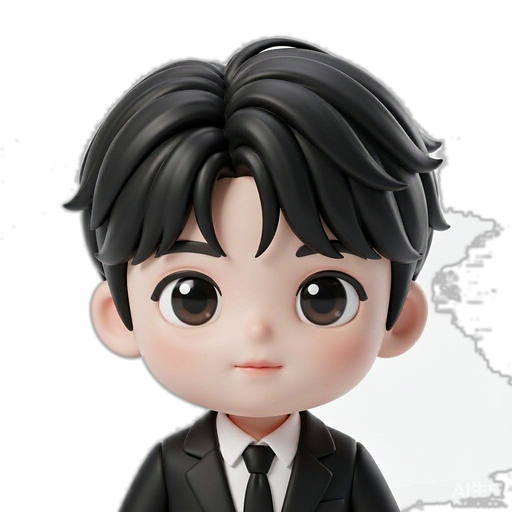

AI 助理头像 · Q版 3D
照你的照片生成的 Q 版 3D 手办形象，大眼睛、软胶质感。 在呼吸、会眨眼、头部轻微摆动——动作幅度克制，耐看。
动态效果

WebP 动画原生循环播放：眨眼、呼吸、头部轻摆。整体叠加极缓慢的呼吸浮动与淡光晕。 背景已抠成透明，可直接叠在任何底色上。
尺寸
64px·128f
96px
f = 帧图边长。小尺寸用低分辨率帧图（体积小），大尺寸用高分辨率帧图（清晰）。 静态 PNG 另备 40 / 64 / 128 / 256 / 512 / 1024。
集成
<!-- 动态：WebP 原生循环，无需 JS -->
<img src="avatar-3d-128.webp" style="width:64px;height:64px">
<!-- 静态：任意场景兜底 -->
<img src="avatar-3d-256.png" style="width:64px;height:64px">
/* 包一层 .av 加呼吸与光晕 */
.av img { animation: breathe 5.2s ease-in-out infinite; }
.av .ring { /* 淡光晕 */ }
动画avatar-3d-{64·128·256}.webp · 76 帧 · 15fps · 透明循环
静态avatar-3d-{40·64·128·256·512·1024}.png · 透明背景
降级prefers-reduced-motion 时动画自动静止（保留首帧）